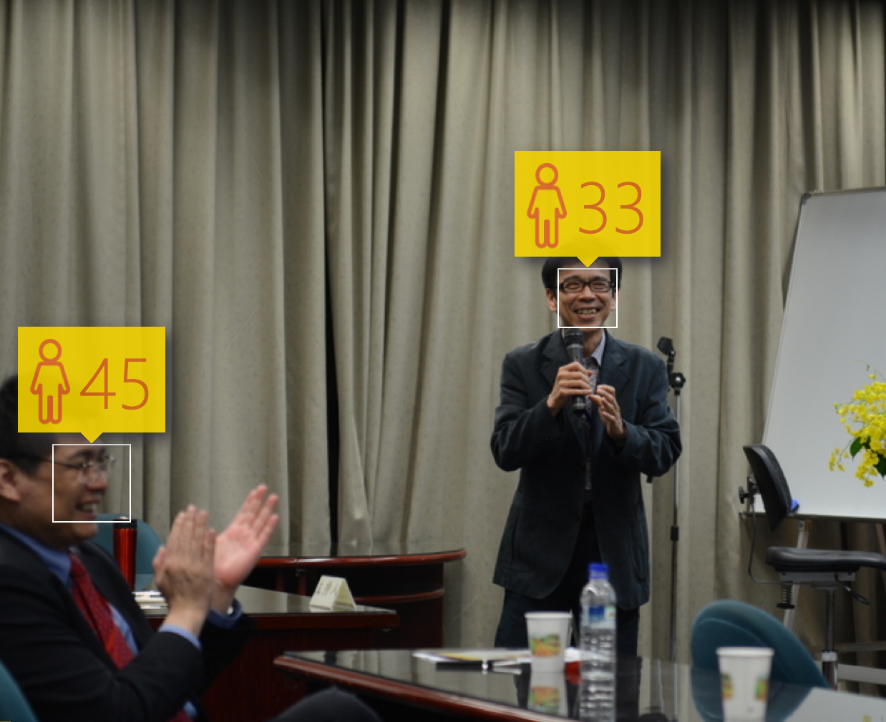
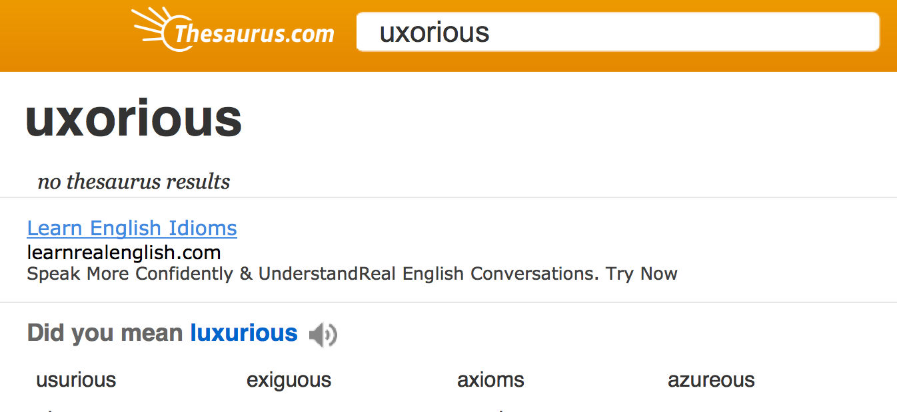
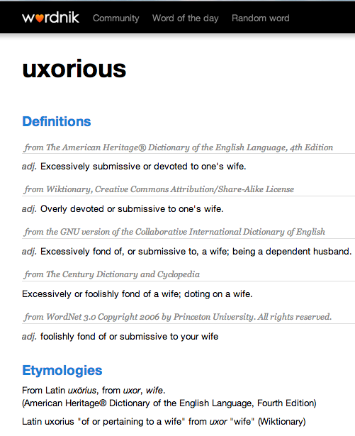
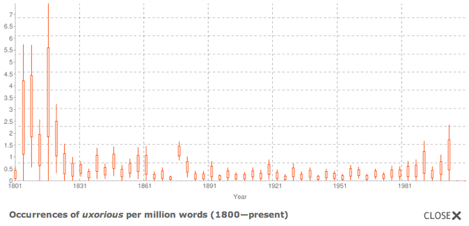
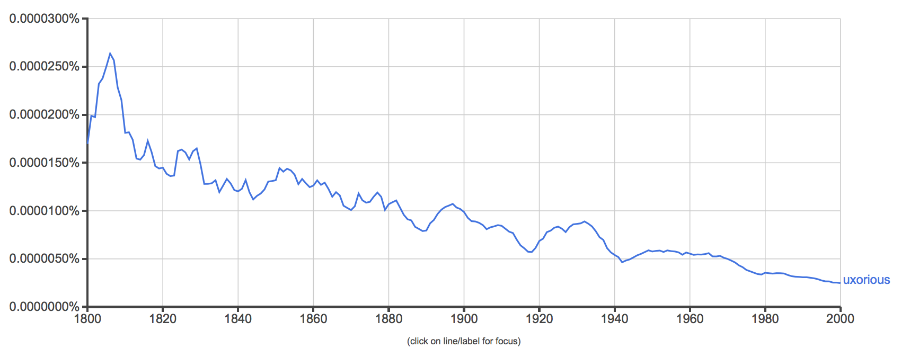
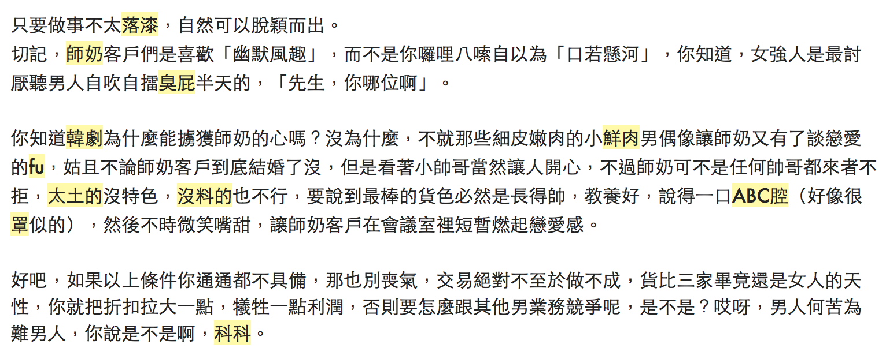
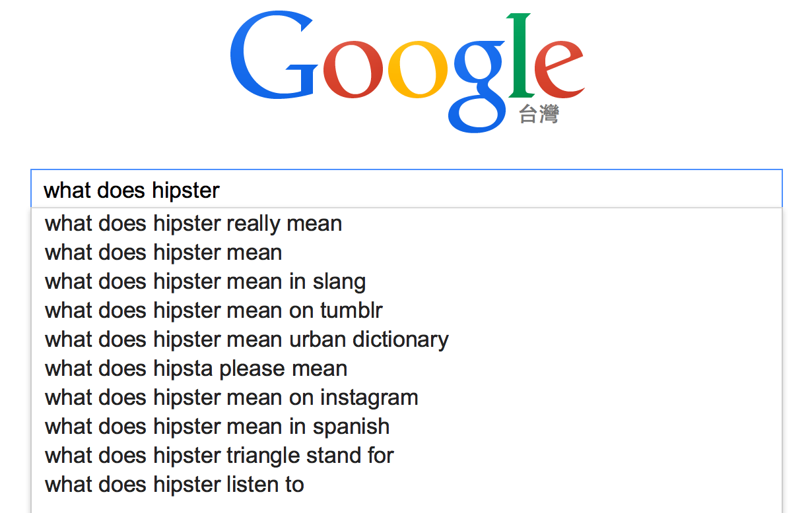
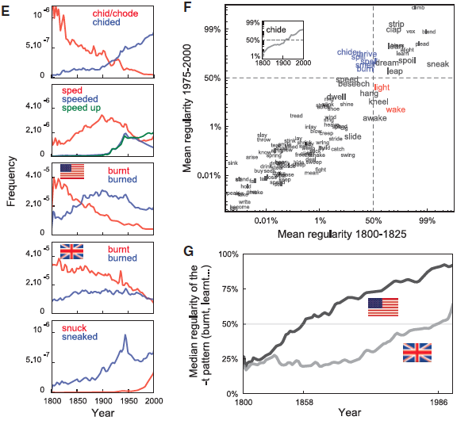
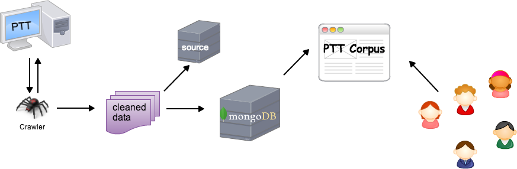
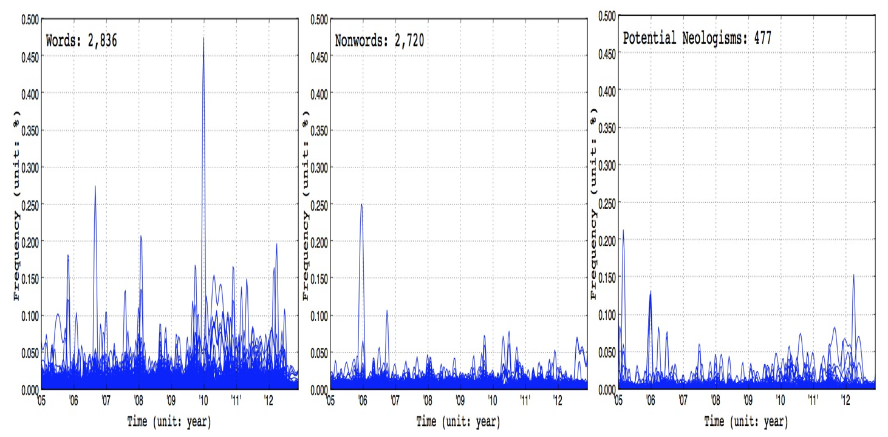

Measuring Leixcal Age
based on Big and Deep Data
Shu-Kai Hsieh, National Taiwan University
AsiaLex 2015, PolyU, Hong Kong
Motivation (X): Age Guessing

Motivation (O): Lexical Age Guessing
Outline
- Introduction
- Previous works on Neologisms
- Measuring Lexical Age
- Conclusion
Outline
Introduction- Previous works on Neologisms
- Measuring Lexical Aging
- Conclusion
Background | Neologism brings challenges to Lexicography
Big data has Big impact on Lexicography?
- Influx of neologisms: a new word is created every 98 minutes (Global Language Monitor). An estimated 800 to 1,000 neologisms are added to English language dictionaries each year (in the 20th century alone, more than 90,000 words have been added). (http://www.languagemonitor.com/no-of-words/)
The majority of new words in fact fail to become established in language. (Algeo,1993)
Without the lack of adequate empirical tools, even the word-watching website can only observe from the sidelines.
Background
Neologism brings challenges to Lexicography
(Algeo,1993) points out that even those words that do make it into dictionaries often fall out of usage. 58% of the new words collected in the Britannica Book of the Year between 1944 and 1976 were not rewarded with a dictionary entry (quoted from (Cook, 2010))


No more uxorious? who said that?!
 
An Embarrasing Lexicographical Example
All dictionaries will turn out to be diachronic/historical/etymological ones? (if no one retired)
An example of MOE Chinese Dictionary (教育部國語辭典為例) APP: full of 'desuetude'
11 new words out of 3 paragraphs randomly picked.

Since when has Google become a Dictionary
Millennial. hipster. yuppie. muppie. Henry, and now, yuccie.

Neologism brings challenges to Linguistics
Lexicalization and Language Change
- Language in use is a dynamically developing system adapting to its ever-changing social environment.
- Language change: phenomenon or epiphenomenon (of a static capacity, Lehmann 1993:320)?
- Lexicalization: the process by which new items that are considered 'lexical' come into being (Brinton and Traugot, 2005)
- adoption into the lexicon
- falling outside the productive rules of grammar
The Emergent Lexicon
Lexicon is understood as a finite list of forms and the possibilities for combining them
Functionalistic take on the (Mental) Lexicon (,if any):
- 'our understanding of both language structure and use is enhanced by the recognition that memory for language is highly affected by language use' (Bybee,1998).
- The memory representation of language consists of units that can constitute utterances or intonation units, i.e., not just words, but also phrases and constructions.
It is the formulation that annoies linguists.
The Emergent Lexicon
\[ \mathbf{Change}_{a,b} = \mathbf{A} \succ \mathbf{B} \]
\[ \mathbf{Change}_{a,b} = \mathbf{A} \succ \begin{Bmatrix} A \\ B \end{Bmatrix} \succ \mathbf{(B)} \]
Most attention were paid to the questions "What is in the arrow?" and "How does change come about?"
The Emergent Collective Lexicon:
Lexicographically, we can define
- diffusion denotes the 'dynamic spread of novel formations across the language and its speakers'; while conventionalization refers to the 'dynamic socio-pragmatic process by means of which a linguistic innovation becomes established in the language and the speech community' (Kerremans, 2015).
- we need a reference measure of lexical age ("vitality" or "durability") for words to help justify their inclusion/exclusion in dictionaries. BUT note!! [pressing
p]
Questions to be answered
Big Three (Brinton and Traugott, 2005)
- The constraint problem: what is the set of possible changes and linguistic conditions for change?
- The transition problem: what are the interesting stages that define the path by which A gives rise to B?
- The actuation problem: how does change start, when and where does it start ('actuation') and how does it spread through the system ('actualization')?
Missing
Outline
- Introduction
Previous works on Neologisms- Our approach
- Conclusion
Previous Approaches
- Linguistic
- Psycholinguistic
- Applied lexicological
- Computational linguistic
Linguistic approach | Neologism and Lexicalization
- Lexicalization is viewed as the way to enrich the lexicon. Lipka (1990) "..the phenomenon that a complex lexeme once coined tends to become a single lexical unit, a simple lexeme."
- Neologisms (new entries in the inventory) can be seen as the results of the conception of lexicalization.
- The production of neologisms encompasses a wide variety of linguistic processes, both sybchronic and diachronic.
- Mechanisms involved: create, modify, combine, or separate existing units, and thus lexicalization would seem to include opposing directions of change leading to greater or lesser dependency and greater or lesser compositionality.
Linguistic approach | Neologism Classification
(Renouf's classification 2013)
- lexical neology (i.e., newly-coined lexical items) e.g, Arab Spring;
Note: various morphological mechnisms for lexical neology (Cook, 2010):
'lexical blends' (e.g., 'webisode' is a blend of web and episode),
'text messaging forms' (e.g., 'any1' for anyone).
- semantic neology (i.e., new sense of word) e.g, 'troll' (an individual who posts inflammatory, rude, and obnoxious comments to an online community); 'sick' (mean ‘excellent’, an amelioration)
- grammatical neology (i.e., neologisms that change grammatical class). friend
lexical neology and semantic neology can be identified in a text corpus at surface level by automatic means (by comparing existing lexicon and discovering the change in collocational environments), while grammatical neology can be identified at a post-processing stage of semantic neology.
Examples of Popular Culture Neologisms
[Staycation] 屬於那一類新詞? morphological strategy?
- lexical neology
- semantic neology
- grammatical neology
Lexical Blends
A vacation at home or in the immediate local area.
Psycholinguistic | Neologism and Lexical Memory
How do neologisms leave the memory trace in our mental lexicon? (frequencies of exposure, types of neologisms, ...)
- (De Vaan, Schreuder, and Baayen, 2007) For the neologisms, a stepwise mixed-effect regression analysis resulted in a model with significant main effects of Length, and Number of Synsets. As for the existing words, ratings increased with increasing Length (\(\hat{\beta}\) = 0.238, t(877) = 2.805, p = .0051) and decreased for increasing Numbers of Synsets (\(\hat{\beta}\) = −0.560, t(877) = −3.359, p = .0008). 新詞 詞長度越長，越熟悉。 synset 數量越多（越多義）越不熟悉。
不過我們關心的是 collective mental lexicon (constrained by real world / socail communication)
Leixogrpahy in Practice
How do you decide whether a new word should be included in an Oxford dictionary?
paradox: in order to find usages of a previously undocumented word suspected of being new, one would have to wait until it was encountered during reading (Barnhart, 1985).
corpus-based/aided method changed lexicographer's works. (Atkins and Rundell, 2008)
Lexicogrpahy in Practice
(Metcalf, 2004) : FUDGE factors for determining whether a word will remain in usage
\[ \Sigma (\mathcal{F}_{0-2}, \mathcal{U}_{0-2}, \mathcal{D}_{0-2}, \mathcal{G}_{0-2}, \mathcal{E}_{0-2}) \]
- F: Frequency
- U: Unobtrusiveness
- D: Diversity of users and situations
- G: Generations of other forms and meanings
- E: Endurance of the concept to which the word refers.
Leixogrpahy in Practice
(Barnhart, 2007):
\[ \mathcal{V} * \mathcal{F} * \mathcal{R} * \mathcal{G} * \mathcal{T} \]
- V: the number of forms of w
- F: the frequency of w
- R: the number of sources in which w occurs
- G: the number of genres in which w occurs
- T: the time span over which w has been observed.
Corpus-based Applied Lexicology
- Frequency effect takes the lead and entrenchment drives the effect?
- Quantitative formulation (..) delineate proposed life stages and "predict whether a word may be survived after being coined".
Corpus-based Applied Lexicology | Stages
(Kerremans, 2014) : four stages of conventionalization.
Life cycle of a word: birth, settling down, obsolescence, death, and re-birth (Renouf 2013)
Corpus-based Applied Lexicology
Word frequency variations take place both due to external and internal factors.
- Product-words (P-words) : driven exogenously by events that are external to the group
- Slang-words (S-words): more endogenously influenced by the social values and language patterns of the communication group.
indexicality: being used by different individuals
topicality: being used in different topics.
Quantitative Lexicology
- Quantitative studies have brought to significant progress in the understanding of word's life-stage statistics (originated, evolved, die out) and language evolution.
- Different statistical model of word usage frequency dynamics have been proposed.
- e.g., (Altmann, Whichard, and Motter, 2013) reveals strong relation between changes in word dissemination and changes in frequency; (Petersen, Tenenbaum, Havlin, et al., 2012) ...
since neologisms are expected to be rather infrequent due to the recency of their coinage, methods for lexical acquisition that rely solely on statistical distributional information are not well-suited for learning syntactic or semantic properties of neologisms, particularly those which have very low frequency. (Cook, 2010)
Computational Approach | Novel word sense detection
You need corpus and lexicon are the prerequisite for an empirical surveys. A reference corpus will make the identification task simpler: An unseen word is matched against the corpus so that it is pinpointed at its first occurrence, and deemed to be a candidate for neologism. (cf. hapax legomena)

Use collocational information to (semi-) automatically determine the candidate's usage and definition.
Outline
- Introduction
- Previous works on Neologism
Our Approach- Conclusion
Our Concern
Do we have the chance to develop a stabalization measure of neologisms that indicate whether they are likely to remain in usage, (and therefore should be included in a dictionary).
What's the role of linguistic knowledge in this exploratory process
Our Approach | Going deep with big data
- Tsunami of linguistic data; massive influx of neologisms is unavoidable
Deep data trumps Big data : "Deep Data framework– an approach based on the premise that a small number of information-rich data streams, leveraged properly, can yield more value than masses of captured data"
Machine learning on big corpus data | Human exploiting the deep linguistic knowledge based on even small number of usages.
Language Resources used
- Google Book ngram corpus (training data to gain insight)
- UDN (The United Daily News): provides newswires over several years in Taiwan.
- Word list from MOE (1997)
- PTT corpus : neologism sensor?
- DeepLex
Google Book Ngram Corpus (GBNC): Overview
- Google Book project of digitized texts containing about 6% (over 8 million books) of all books ever printed.
- N-gram corpus extracted from the project include distributions of n-grams in books written over the past 200 years.
Culturomics, Lexicography, and Big Data
Analysis of this corpus enables us to investigate cultural trends quantitatively. We survey the vast terrain of 'culturomics,' focusing on linguistic and cultural phenomena that were reflected in the English language between 1800 and 2000. We show how this approach can provide insights about fields as diverse as lexicography, the evolution of grammar, collective memory, the adoption of technology, the pursuit of fame, censorship, and historical epidemiology.(Science, 331(6014): 176–82, 2011).
Google Books for Culturomics
The evolution of grammar
- Competition between regular and irregular verbs: It took 200 years for the fastest-moving verb ("chide") to go from 10% to 90%.

World Knowledge, Language, and Big Data
- Google's Provides Free Access (via BigQuery) to GDELT project
- Danger of de-contextualization though.
Our Linguistic Toolbox | DeepLex
It takes the functional position (usage-based view) in determining units and patterns (in Chinese), as well as the ontological grounding on the relation between linguistic objects and situations (bits of reality). (Langacker 1987, 1988, 1999; Croft 2002; Tomasello 2003; Bybee 2006, 2010)
Lexical data at different levels are modularized (only for practical reasons), such as syntax-semantics module, emotion module, discourse and pragmatic module, diachronic module, etc. Researchers from different fields can initiate a new cooperation based upon.
The Deep LEXICON Project: Variables
| Module.Variable | Description |
|---|---|
concept.sense |
word sense number from Chinese Wordnet, CWN, please help |
concept.gloss |
sense definitions from CWN |
concept.relations |
lexical semantic relations |
emotion.polarity |
polarity of descriptive emotional words |
emotion.location |
location collocates of emotion |
emotion.cause |
cause collocates |
emotion.result |
resulting event collocates |
emotion.time |
time collocates |
frequency.asbc |
frequency of Sinica Corpus |
frequency.plurk |
frequency of Plurk Corpus |
frequency.childes |
frequency of CHILDES Corpus |
frequency.ptt |
frequency of PTT |
AND MANY OTHERS! modules in progress: 情緒 發展歷程 語義 使用頻率 年紀 關係 性別 教學難易 部首概念 意類 知識本體 社會心理人格 . . . . . . . . . . . . . .
Time-series: a pilot study for short-term frequency
(Liu, Hsieh, and Prévot, 2013)
- PTT-based (2015-2012, three hot discussion boards), preproceesed.
- PTT Corpus (
http://lopen.linguistics.ntu.edu.tw/PTT)

Time series predictive model
Results and Discussion
- These large, short-term fluctuations add an important new dimension to the study of the long-term dynamics of language, as any novel expression must survive in the short term to survive in the long term. (Altmann, 2011).
But short-term frequency data do not reveal the difference between diffusion and stablization.

Results and Discussion
How many years to be observed ?
(Chang 2008; Wang 2010) proposed to use normalized frequency within a year or so to judge whether a once diffused new word is conventionalized is using or is failed to be captured. (Xu,1999) proposed that 10 years should be the criteria.
Since the Surface Frequency measure is 'zero' for all neologisms, hard to be a good indicator for stablization index.
也容易受特定事件影響。Some words may sporadically come into fashion in certain external events. e.g., 挺 may come and go follow the start and end of election. 花博。本研究把與特定事件 bind 在一起的叫做 fashion word, 不處理。
Modeling the Life Cycle of Words: Our Second Approach
Use
google book ngramas training data (to infer the laws), andpttas test data.In addition to previous efforts that exploit the syntagmatic patterns of a candidate neologism (e.g., via
collocate profile), we also propose to incorporate paradigmatic patterns (via creatingsocial networkof the candidate).Power the predition model with weights from human jugements (via questionnaire web application or APP games)
DeepLEX is in
BTU Question: 那些變項|組合最大地決定了詞彙年齡 (存活能力) ?
Our Approach | Targets and Hypothesis
Focus only on:
- words that are
newly diffused(for about 1 years). - words that were considered
new words(50 years ago). - words that are assumed to be
conventionalized(existed over around 50 years).
Proper nouns are ruled out, for they are mostly propelled into the media glare due to a real-world event ot popular preoccupation.- words that are
- Hypothesis
- 跟競爭/適者生存有關係 e.g. ic vs ical
- Linguistic knowledge can be exploited to infer the survival chance.
Goal
Discovering Influential Factors
What are the driven (linguistic) factors for a lexical item to enter the collective mental lexicon?
- (Short-term) usage frequency pattern
- Lexical social network
Regression Modeling of the Life Stage of Diffusion and Stabilization
- ex
Finding the Linguistic Niche
Lexical Social Network
- (Altmann et al., 2011) proposed the concept of niche, defined as the relationship between the word and the characteristic features of the environments in which it is used.
- Two important aspects of the size of the word niche to be quantified: the range of individuals using the word and the range of topics it is used to discuss.
- Controlling for word frequency, they show that these aspects of the word niche are strong determinants of changes in word frequency.
(Baayen,2008) developed measure of
the age of a verbon the basis of an etymological disctionary, and found that neighborhood density if the stem is a predictor for the age of a verb."New words which are in competition with an already established word (i.e., the new word and established word are roughly synonymous) are more likely to succeed than new words which are not in competition with an established form". (Boulanger, 2002), quoted from Cook (2010)).
Finding the Linguistic Niche
Lexical Social Network
Distributed Social Network of Neologisms
SNA's parlance
- 交各式各樣的朋友 (Make friends, as many/varied as you can)
- 在競爭環境下找自己的利基點 (Compete with established ones if you can)
- Frequency Diversity (e.g., the dissemination of words across individuals/generations/topics/boards/...)
- Strength of Ties
- Niche (when different forms compete to express the same meaning)
Distributional (Semantic) Model based on the Deep LEXICON
Magic Formular identified
Measure of Inclusion: (Hseih et al. forthcoming) \[ \mathcal{I} = \ln( \alpha \mathcal{F} + \beta \frac{S}{P}) \]
- F: frequency diversity within short-term time span (revised constant U)
- number of sources (ptt and newspapers)
- number of genres (different boards)
- S: syntagtic lexical network via collocation variations (type/token)
- P: paradigmatic lexical network via distributional proximity
Dictionary as A Mashup (from a non-lexicographer's need)
- Design instead of Compile: linguistic annotation craft
- Mobile, customized, ... can't resist
user experience, etymology, establishment estimate,
Dynamaic Neocrawler, Sketch and Estimation
- Crawl the posts/articles from PTT/newspapers on a daily base.
- Compare with entries in Deeplex, filter out (through rules and manual check) the candidate neologisms.
- Sketch the profile, calculate the I score.
- Crowd weighting.
Prototypical System
問題：
- variant forms and spellings: (text normalization: to convert all instances of a word in its various forms to a single canonical form? (e.g., google-googled;) 頗喝
Conclusion
- New paradigm of Doing Lexicography with B & D:
- Big linguistic data can help machine training of the understanding/inference of the global lexical behaviour (e.g., semantic changes).
- Deep linguistic knowledge can help identify the stabalization process of neologisms, and we have proposed a reproducible, dynamically updated measure for lexical stablization.
Limits and Future works include:
- Evaluate the results
- against lexicographers/crowds.
- by calculating the I score of all the entries in the dictionary.
- Work on semantic neology (漂亮 vs 正) and automatic re-ordering of senses (in Wordnet)
- Evaluate the results
Acknowledgement
王伯雅 (Amber Wang) 劉純睿 (Owen Liu)
Reference
[1] B. S. Atkins and M. Rundell. The Oxford guide to practical lexicography. Oxford University Press, 2008.
[2] D. K. Barnhart. "A calculus for new words". In: Dictionaries: Journal of the Dictionary Society of North America 28.1 (2007), pp. 132-138.
[3] V. M. Boulanger. What Makes a Coinage Successful?: The Factors Influencing the Adaptation of English New Words. UMI Dissertation Services, 2002.
[4] C. P. Cook. "Exploiting linguistic knowledge to infer properties of neologisms". PhD thesis. University of Toronto, 2010.
[5] L. De Vaan, R. Schreuder and R. H. Baayen. "Regular morphologically complex neologisms leave detectable traces in the mental lexicon". In: The Mental Lexicon 2.1 (2007), pp. 1-24.
[6] D. Kerremans. Web of New Words. Peter Lang, 2014.
[7] T. Liu, S. Hsieh and L. Prévot. "Observing Features of PTT Neologisms: A Corpus-driven Study with N-gram Model." In: ROCLING. Ed. by H. e. a. Yang. 2013.
[8] A. A. Metcalf. Predicting new words: The secrets of their success. Houghton Mifflin Harcourt, 2004.